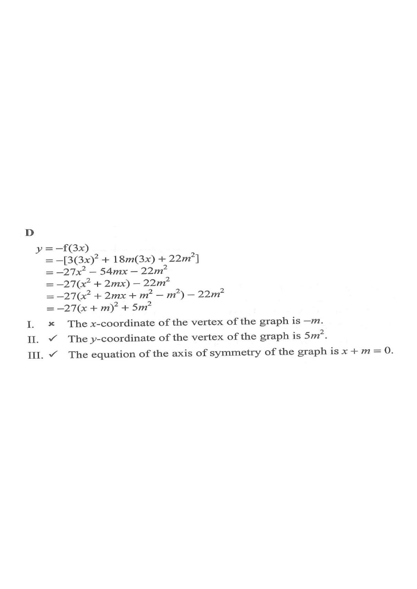

Readout: the parabola $y=-27(x+m)^2+5m^2$ (shown with $m=1$).
Let $f(x)=3x^{2}+18mx+22m^{2}$, where $m$ is a real constant. Which of the following statements about the graph of $y=-f(3x)$ must be true?

$$y=-f(3x)=-\bigl[\,3(3x)^{2}+18m(3x)+22m^{2}\,\bigr]$$ Since $3(3x)^2=27x^2$ and $18m(3x)=54mx$: $$y=-27x^{2}-54mx-22m^{2}$$
Replace every $x$ in $f(x)$ by $3x$, then take the negative of the whole expression.$$y=-27\bigl(x^{2}+2mx\bigr)-22m^{2}$$ Add and subtract $m^{2}$ inside the bracket: $$y=-27\bigl(x^{2}+2mx+m^{2}-m^{2}\bigr)-22m^{2}$$ $$y=-27\bigl(x+m\bigr)^{2}+27m^{2}-22m^{2}$$ $$\boxed{\,y=-27(x+m)^{2}+5m^{2}\,}$$
$x^{2}+2mx=(x+m)^{2}-m^{2}$ — the perfect-square trick with half of the coefficient of $x$.
Here $a=-27$, $h=-m$, $k=5m^{2}$, so the vertex is
$$\bigl(-m,\;5m^{2}\bigr)$$
Therefore the $x$-coordinate of the vertex is $-m$, not $m$ — so I is false.
The $y$-coordinate of the vertex is $5m^{2}$ — so II is true.
The axis of symmetry is the vertical line through the vertex: $$x=-m\quad\Longleftrightarrow\quad x+m=0$$ So III is true.
Axis of symmetry: $x=h$ where $h$ is the $x$-coordinate of the vertex.Question. Let \(f(x)=2x^{2}-8mx+5m^{2}\), where \(m\) is a real constant. Find the vertex and the axis of symmetry of the graph of \(y=-f(2x)\).